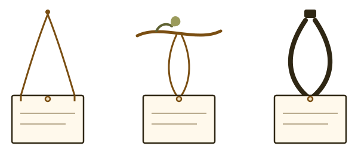

One background · data on top
The dirty yin-yang is the page
The cutout is baked into a single dirty background, sharp, with the owl's eye on the yin-yang eye. The eleven title-only sections sit around it: nature scattered on the left, software on the right, About and Contact flat at the bottom. Software hangs from compact C05 lanyards; every nature section from a compact robin perch. The robins use the book's transparent PNG.

A — Field Board
The one-background poster: the cutout, tagline and eleven title-only sections around it. Nature is scattered on the left, software on the right, About and Contact flat at the bottom.
Open the field board
Hook options
Ten anchor studies. Selected: N03 robin perch and C05 lanyard.
Review the anchorsThe dirty yin-yang and the cutout are extracted from the concept artwork; the background is a single composite image. The robin perch uses the book's transparent PNG. Patrick Hand (OFL) is used for handwritten labels.